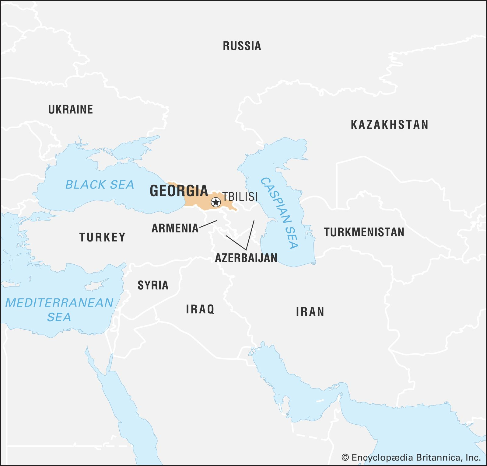

A small charming country where ancient history meets stunning landscapes, offering a perfect mix of vibrant culture, delicious cuisine, and warm hospitality nestled between Europe and Asia deep in mountains of Caucasus

Georgia is a country rich in history and culture, located at the crossroads of Eastern Europe and Western Asia, with the Black Sea to the west. To the north, it is bordered by the Greater Caucasus mountain range, which serves as a natural barrier separating it from Russia. This mountainous region features stunning landscapes, including snow-capped peaks and lush valleys, making it a haven for outdoor enthusiasts. To the south, Georgia shares borders with Turkey and Armenia, while Azerbaijan lies to the southeast. The country's varied geography includes not only mountains but also fertile plains, rolling hills, and coastal areas along the Black Sea, which contribute to its agricultural diversity. This strategic location has historically made Georgia a melting pot of cultures, with influences from Europe, Asia, and the Middle East, reflected in its rich traditions, cuisine, and architecture. The capital city, Tbilisi, is a vibrant hub known for its historic Old Town, diverse neighborhoods, and dynamic arts scene, showcasing the country's unique blend of past and present.  With a history that stretches back thousands of years, Georgia has been influenced by numerous civilizations, including the Greeks, Romans, Persians, and Byzantines, yet it has managed to preserve its own unique identity. Known as the cradle of wine, Georgia boasts one of the oldest wine-making traditions in the world, with evidence of viticulture dating back over 8,000 years. Its strategic location along the ancient Silk Road made it a melting pot of cultures, and its resilience in the face of numerous invasions and occupations has shaped a proud and distinct national character. Georgian culture is deeply rooted in its traditions, especially its legendary hospitality. The traditional Georgian feast, or "supra," is a celebration of food, music, and toasts led by the "tamada" (toastmaster), reflecting the importance of family and community in Georgian life. The country’s music and dance are equally vibrant, with polyphonic singing and dynamic folk dances like the Kartuli and Khevsuruli showcasing its rich artistic heritage. Religion also plays a significant role in Georgia, as one of the world’s oldest Christian nations, with stunning medieval churches and monasteries dotting its landscape. The capital city, Tbilisi, is a blend of ancient and modern, with its narrow cobblestone streets, sulfur baths, and futuristic architecture standing side by side. Other cities like Batumi, with its subtropical Black Sea coast, and Kutaisi, home to the ancient Gelati Monastery, offer diverse experiences. The breathtaking natural beauty of the Caucasus Mountains, lush green valleys, and vineyards makes Georgia a haven for adventure lovers and hikers. From its rich history and vibrant traditions to its warm people and picturesque landscapes, Georgia is a gem waiting to be explored.
Couple of must see places in Georgia: